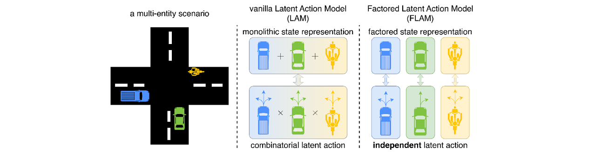
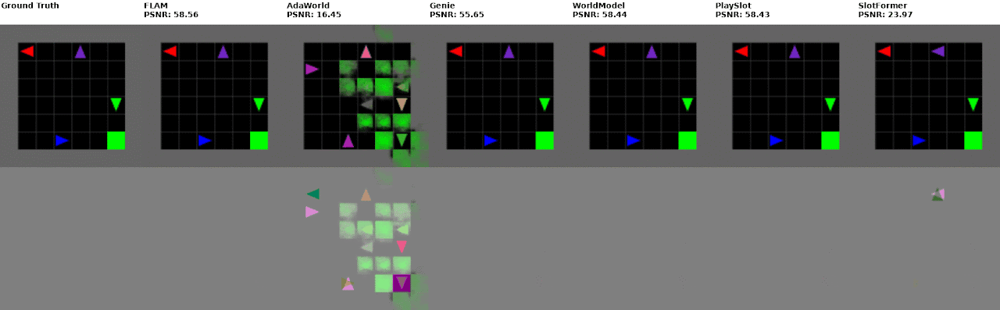
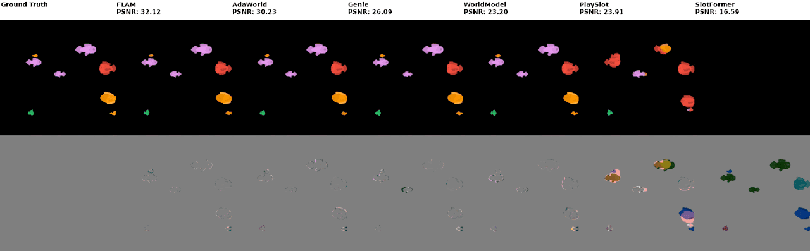
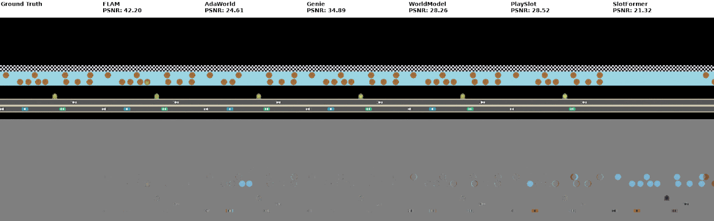
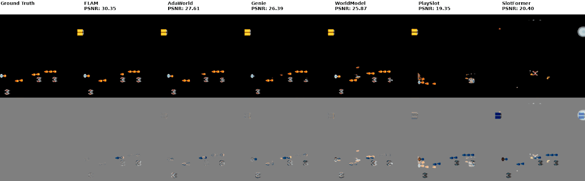
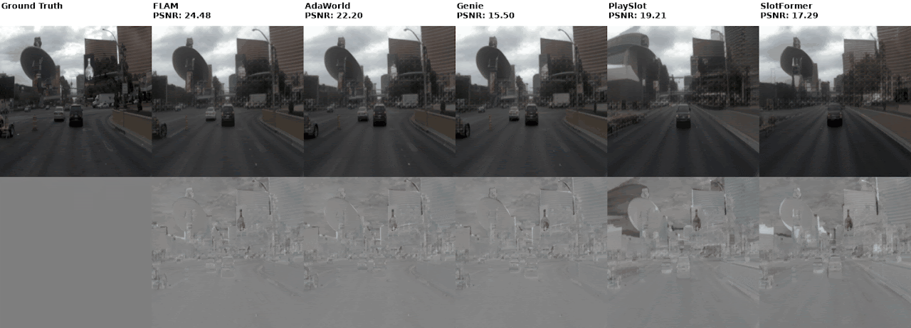
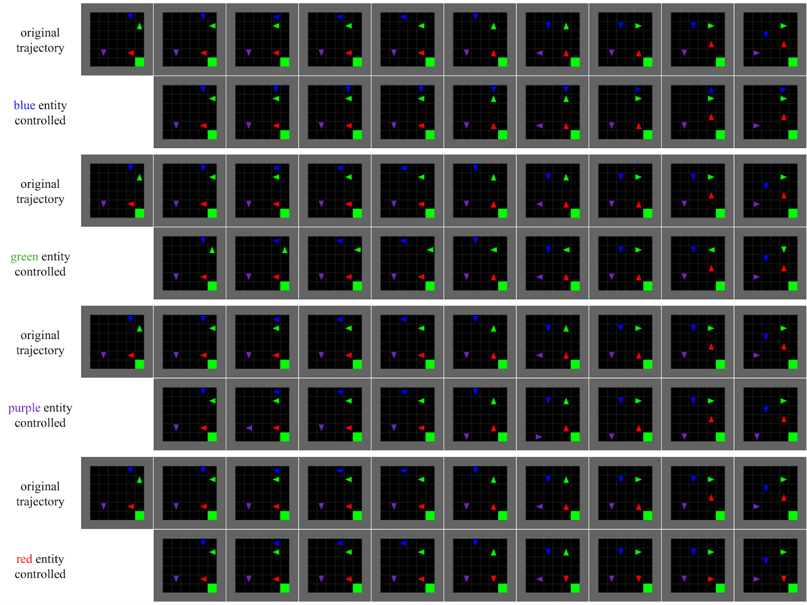
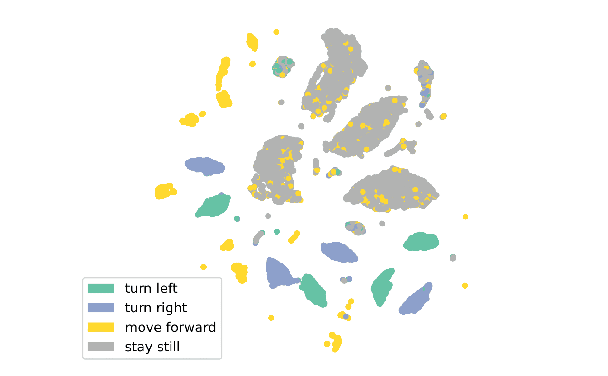

Overview

Learning latent actions from action-free video has emerged as a powerful paradigm for scaling up controllable world model learning. Latent actions provide a natural interface for users to iteratively generate and manipulate videos. However, most existing approaches rely on monolithic inverse and forward dynamics models that learn a single latent action to control the entire scene, and therefore struggle in complex environments where multiple entities act simultaneously.
This paper introduces Factored Latent Action Model (FLAM), a factored dynamics framework that decomposes the scene into independent factors, each inferring its own latent action and predicting its own next-step factor value. This factorized structure enables more accurate modeling of complex multi-entity dynamics and improves video generation quality in action-free video settings compared to monolithic models.
Based on experiments on both simulation and real-world multi-entity datasets, we find that FLAM outperforms prior work in prediction accuracy and representation quality, and facilitates downstream policy learning, demonstrating the benefits of factorized latent action models.
Experiments
Rollouts with inferred latent actions
To assess dynamics modeling accuracy, we first infer latent actions from the ground-truth frames and then generate 10-step predictions autoregressively.
Example rollouts can be found below. The first row shows the ground truth future frames and predictions of all methods. The second row highlights the prediction errors.





Rollouts with randomly sampled latent actions
FLAM allows for changing / editing the motion of one entity without affecting the others. Here we show controllable video generation on the MultiGrid dataset.
We let a human user specify an entity to control, together with sampling a latent action from the prior distribution for each time step, and then roll out multiple steps. Meanwhile, the remaining entities that are not manipulated follow their original latent actions. The first row is the original video. Taking the first frame of the original video as the initial state, each of the following rows represents the generated video of manipulating one entity.
This demonstrates that latent actions can be used as a control variable to generate various video frames even with the same initial frame. Factorization offers the freedom of manipulating each entity independently instead of the monolithic scene, therefore leading to more diversity in video generation.

Latent action visualization
UMAP projection of the learned latent actions on the MultiGrid dataset. Each point corresponds to a latent action inferred by the IDM for one factor on a single transition from the observation-only dataset.
Points are colored by the ground-truth action taken by the corresponding agent at that transition (action labels are used only for visualization and are not used for training).

